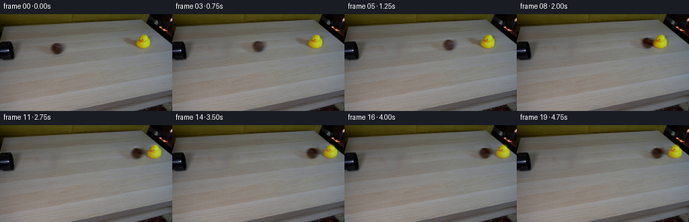
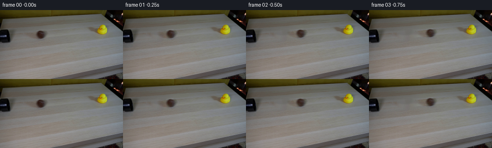

候选 01 · 2026-11-08T21:50:23.049832+00:00 · 点开播放与检查图
inspection.png

transition_check.png

代码变化
--- 上一保存版本
+++ 本次保存版本
@@ -0,0 +1,127 @@
+from pathlib import Path
+import math
+import numpy as np
+import cv2
+from PIL import Image
+from scipy.ndimage import gaussian_filter
+import artifact_io
+
+ROOT = Path(__file__).resolve().parent
+H, W = 144, 256
+Y, X = np.mgrid[:H, :W].astype(np.float32)
+
+
+def ellipse(cx, cy, rx, ry, angle=0.):
+ dx, dy = X-cx, Y-cy
+ u = dx*np.cos(angle)+dy*np.sin(angle)
+ v = -dx*np.sin(angle)+dy*np.cos(angle)
+ return ((u/rx)**2+(v/ry)**2) < 1
+
+
+def restore_table(image, mask, seed):
+ # Local, nonlearned reconstruction using only the surrounding tabletop.
+ m = (mask*255).astype(np.uint8)
+ repaired = cv2.inpaint(image, m, 4, cv2.INPAINT_NS).astype(np.float32)
+ rng = np.random.default_rng(seed)
+ grain = rng.normal(0, .65, (H, W)).astype(np.float32)
+ repaired += grain[..., None]
+ feather = gaussian_filter(mask.astype(np.float32), .85)
+ return image.astype(np.float32)*(1-feather[..., None])+repaired*feather[..., None]
+
+
+def warp(layer, dx=0., dy=0., scale=1., angle=0., pivot=(0., 0.)):
+ c, s = math.cos(angle)*scale, math.sin(angle)*scale
+ px, py = pivot
+ matrix = np.array([[c, -s, px+dx-c*px+s*py],
+ [s, c, py+dy-s*px-c*py]], np.float32)
+ return cv2.warpAffine(layer, matrix, (W,H), flags=cv2.INTER_LINEAR,
+ borderMode=cv2.BORDER_CONSTANT, borderValue=0)
+
+
+def stopped_motion(t, velocity, deceleration):
+ t = np.clip(t, 0, velocity/deceleration)
+ return velocity*t-.5*deceleration*t*t
+
+
+def generate():
+ image = np.array(Image.open(ROOT/'first_frame.png').convert('RGB'))
+ original = image.astype(np.float32)
+ # Ball, its contact shadow, and the soft shadow cast toward the left.
+ bm = (ellipse(85.0,51.4,15.0,12.7) |
+ ellipse(73.,53.,18.,8.,.20))
+ without_ball = restore_table(image, bm, 72)
+ ball = original-without_ball
+
+ # The duck's existing shadow is kept as a separate moving layer so that
+ # rocking the duck does not turn its shadow into a rotating cardboard cutout.
+ dm = np.zeros((H,W), np.uint8)
+ outline = np.array([(177,33),(192,33),(202,35),(204,29),(211,27),
+ (219,28),(224,33),(226,39),(225,48),(222,53),
+ (214,55),(205,54),(198,49),(190,47),(183,44),
+ (179,39)], np.int32)
+ cv2.fillPoly(dm, [outline], 1)
+ table = restore_table(np.clip(without_ball,0,255).astype(np.uint8), dm>0, 17)
+ # Outside the duck repair, preserve floating point data exactly.
+ df = gaussian_filter(dm.astype(np.float32), .85)
+ table = np.where((df>1.e-7)[...,None], table, without_ball)
+ duck = without_ball-table
+ chroma = (original[...,0]+original[...,1])*.5-original[...,2]
+ duck_region = (X>=201)&(X<=224)&(Y>=28)&(Y<=52)
+ color_mask = ((chroma>35)&duck_region).astype(np.uint8)
+ color_mask = cv2.dilate(color_mask, np.ones((3,3),np.uint8), iterations=1)
+ matte = gaussian_filter(color_mask.astype(np.float32), .55)
+ duck_body = duck*matte[...,None]
+ duck_shadow = duck-duck_body
+
+ # Preserve measured diffuse shading, but rotate fine surface variations
+ # on the ball as it rolls. No new object or background imagery is used.
+ detail = original-gaussian_filter(original, (1.05,1.05,0))
+ radius = np.sqrt(((X-84.8)/8.2)**2+((Y-51.2)/8.5)**2)
+ material_mask = np.clip((.98-radius)/.22, 0, 1)
+ detail *= material_mask[...,None]
+ slope = -.079
+ hit_time = 2.0
+ run = 109.6
+ decel_before = 4.
+ initial_velocity = (run+.5*decel_before*hit_time**2)/hit_time
+
+ def render(t):
+ if t <= hit_time:
+ dx = initial_velocity*t-.5*decel_before*t*t
+ duck_dx, rocking = 0., 0.
+ else:
+ elapsed = t-hit_time
+ dx = run+stopped_motion(elapsed, 15., 8.)
+ duck_dx = stopped_motion(elapsed, 30., 20.)
+ rocking = .52*math.exp(-2.4*elapsed)*math.sin(7.5*elapsed)
+ dy = slope*dx
+ spin = dx/8.45
+ spun_detail = warp(detail, angle=spin, pivot=(84.8,51.2))
+ ball_surface = ball + .80*(spun_detail-detail)*material_mask[...,None]
+ # Small perspective change along the straight, receding trajectory.
+ scale = 1.-.035*min(dx/run,1.15)
+ moving_ball = warp(ball_surface, dx, dy, scale, pivot=(84.8,59.5))
+ moving_shadow = warp(duck_shadow, duck_dx, slope*duck_dx,
+ pivot=(213.5,49.7))
+ moving_duck = warp(duck_body, duck_dx, slope*duck_dx,
+ angle=rocking, pivot=(213.5,49.7))
+ return table + moving_shadow + moving_ball + moving_duck
+
+ frames = [image.copy()]
+ for i in range(1,20):
+ t = i/4.
+ # Short camera exposure: modest subpixel motion blur, not a dissolve.
+ samples = [render(t+dt) for dt in (-1/96.,0.,1/96.)]
+ frame = np.clip(np.mean(samples,axis=0),0,255).round().astype(np.uint8)
+ frames.append(frame)
+ frames = np.stack(frames)
+ assert np.array_equal(frames[0], image)
+ artifact_io.save(frames, ROOT)
+ # Numeric diagnostics and generated intermediates remain local.
+ tmp = ROOT/'.tmp'
+ tmp.mkdir(exist_ok=True)
+ Image.fromarray(np.clip(table,0,255).round().astype(np.uint8)).save(tmp/'reconstructed_table.png')
+ np.save(tmp/'rendered_frames.npy',frames)
+
+if __name__ == '__main__':
+ generate()
候选 02 · 2026-11-08T21:51:24.614139+00:00 · 点开播放与检查图
transition_check.png

代码变化
--- 上一保存版本
+++ 本次保存版本
@@ -72,11 +72,22 @@
matte = gaussian_filter(color_mask.astype(np.float32), .55)
duck_body = duck*matte[...,None]
duck_shadow = duck-duck_body
+ # Recover an antialiased opacity from the yellow chroma, while retaining
+ # opaque shaded interior pixels (including the orange bill and black eye).
+ bg_chroma = (table[...,0]+table[...,1])*.5-table[...,2]
+ local_chroma = cv2.dilate(chroma, np.ones((5,5),np.uint8))
+ duck_alpha = np.clip((chroma-bg_chroma)/np.maximum(local_chroma-bg_chroma,1),0,1)
+ solid = ((chroma>45)&duck_region).astype(np.uint8)
+ interior = cv2.erode(solid,np.ones((3,3),np.uint8))>0
+ duck_alpha[interior] = 1.
+ duck_alpha *= cv2.dilate(solid,np.ones((3,3),np.uint8))
+ duck_foreground = duck_body+table*duck_alpha[...,None]
# Preserve measured diffuse shading, but rotate fine surface variations
# on the ball as it rolls. No new object or background imagery is used.
detail = original-gaussian_filter(original, (1.05,1.05,0))
radius = np.sqrt(((X-84.8)/8.2)**2+((Y-51.2)/8.5)**2)
+ ball_alpha = np.clip((1.08-radius)*5.,0,1)
material_mask = np.clip((.98-radius)/.22, 0, 1)
detail *= material_mask[...,None]
slope = -.079
@@ -100,12 +111,19 @@
ball_surface = ball + .80*(spun_detail-detail)*material_mask[...,None]
# Small perspective change along the straight, receding trajectory.
scale = 1.-.035*min(dx/run,1.15)
- moving_ball = warp(ball_surface, dx, dy, scale, pivot=(84.8,59.5))
+ moving_ball = warp(ball_surface+without_ball*ball_alpha[...,None],
+ dx, dy, scale, pivot=(84.8,59.5))
+ moving_ball_alpha = warp(ball_alpha, dx, dy, scale, pivot=(84.8,59.5))
moving_shadow = warp(duck_shadow, duck_dx, slope*duck_dx,
pivot=(213.5,49.7))
- moving_duck = warp(duck_body, duck_dx, slope*duck_dx,
+ moving_duck = warp(duck_foreground, duck_dx, slope*duck_dx,
angle=rocking, pivot=(213.5,49.7))
- return table + moving_shadow + moving_ball + moving_duck
+ moving_duck_alpha = warp(duck_alpha, duck_dx, slope*duck_dx,
+ angle=rocking, pivot=(213.5,49.7))
+ result = table+moving_shadow
+ result = result*(1-moving_ball_alpha[...,None])+moving_ball
+ result = result*(1-moving_duck_alpha[...,None])+moving_duck
+ return result
frames = [image.copy()]
for i in range(1,20):
命令 4 · 2026-11-08T21:40:43.975105+00:00/bin/bash -lc "python - <<'PY'
from PIL import Image
import numpy as np
im=np.array(Image.open('first_frame.png'))
for name,x0,x1,y0,y1 in [('ball',68,102,39,65),('duck',195,229,26,59),('pipe',0,31,30,74)]:
a=im[y0:y1,x0:x1].astype(float)
print('\\n',name,'x',x0,'-',x1)
print(' '+''.join(str(x//10%10) for x in range(x0,x1)));print(' '+''.join(str(x%10) for x in range(x0,x1)))
for y in range(y0,y1):
s=''
for x in range(x0,x1):
r,g,b=im[y,x].astype(float);m=(r+g+b)/3
if r>g*1.3 and r>b*1.4 and r-g>12:c='B'
elif g>b*1.5 and r>b*1.5 and r-b>20:c='Y'
elif m<18:c='#'
elif m<40:c='X'
elif m<70:c='o'
elif m<95:c='-'
elif m<115:c='.'
elif m<135:c=' '
else:c='~'
s+=c
print(f'{y:3} '+s)
print('RGB 2px grid')
for y in range(y0,y1,2):
print(y,' '.join(f'{x}:{im[y,x].tolist()}' for x in range(x0,x1,3)))
PY"exit 0 命令 8 · 2026-11-08T21:50:22.051810+00:00/bin/bash -lc "cat > generate.py <<'PY'
from pathlib import Path
import math
import numpy as np
import cv2
from PIL import Image
from scipy.ndimage import gaussian_filter
import artifact_io
ROOT = Path(__file__).resolve().parent
H, W = 144, 256
Y, X = np.mgrid[:H, :W].astype(np.float32)
def ellipse(cx, cy, rx, ry, angle=0.):
dx, dy = X-cx, Y-cy
u = dx*np.cos(angle)+dy*np.sin(angle)
v = -dx*np.sin(angle)+dy*np.cos(angle)
return ((u/rx)**2+(v/ry)**2) < 1
def restore_table(image, mask, seed):
# Local, nonlearned reconstruction using only the surrounding tabletop.
m = (mask*255).astype(np.uint8)
repaired = cv2.inpaint(image, m, 4, cv2.INPAINT_NS).astype(np.float32)
rng = np.random.default_rng(seed)
grain = rng.normal(0, .65, (H, W)).astype(np.float32)
repaired += grain[..., None]
feather = gaussian_filter(mask.astype(np.float32), .85)
return image.astype(np.float32)*(1-feather[..., None])+repaired*feather[..., None]
def warp(layer, dx=0., dy=0., scale=1., angle=0., pivot=(0., 0.)):
c, s = math.cos(angle)*scale, math.sin(angle)*scale
px, py = pivot
matrix = np.array([[c, -s, px+dx-c*px+s*py],
[s, c, py+dy-s*px-c*py]], np.float32)
return cv2.warpAffine(layer, matrix, (W,H), flags=cv2.INTER_LINEAR,
borderMode=cv2.BORDER_CONSTANT, borderValue=0)
def stopped_motion(t, velocity, deceleration):
t = np.clip(t, 0, velocity/deceleration)
return velocity*t-.5*deceleration*t*t
def generate():
image = np.array(Image.open(ROOT/'first_frame.png').convert('RGB'))
original = image.astype(np.float32)
# Ball, its contact shadow, and the soft shadow cast toward the left.
bm = (ellipse(85.0,51.4,15.0,12.7) |
ellipse(73.,53.,18.,8.,.20))
without_ball = restore_table(image, bm, 72)
ball = original-without_ball
# The duck's existing shadow is kept as a separate moving layer so that
# rocking the duck does not turn its shadow into a rotating cardboard cutout.
dm = np.zeros((H,W), np.uint8)
outline = np.array([(177,33),(192,33),(202,35),(204,29),(211,27),
(219,28),(224,33),(226,39),(225,48),(222,53),
(214,55),(205,54),(198,49),(190,47),(183,44),
(179,39)], np.int32)
cv2.fillPoly(dm, [outline], 1)
table = restore_table(np.clip(without_ball,0,255).astype(np.uint8), dm>0, 17)
# Outside the duck repair, preserve floating point data exactly.
df = gaussian_filter(dm.astype(np.float32), .85)
table = np.where((df>1.e-7)[...,None], table, without_ball)
duck = without_ball-table
chroma = (original[...,0]+original[...,1])*.5-original[...,2]
duck_region = (X>=201)&(X<=224)&(Y>=28)&(Y<=52)
color_mask = ((chroma>35)&duck_region).astype(np.uint8)
color_mask = cv2.dilate(color_mask, np.ones((3,3),np.uint8), iterations=1)
matte = gaussian_filter(color_mask.astype(np.float32), .55)
duck_body = duck*matte[...,None]
duck_shadow = duck-duck_body
# Preserve measured diffuse shading, but rotate fine surface variations
# on the ball as it rolls. No new object or background imagery is used.
detail = original-gaussian_filter(original, (1.05,1.05,0))
radius = np.sqrt(((X-84.8)/8.2)**2+((Y-51.2)/8.5)**2)
material_mask = np.clip((.98-radius)/.22, 0, 1)
detail *= material_mask[...,None]
slope = -.079
hit_time = 2.0
run = 109.6
decel_before = 4.
initial_velocity = (run+.5*decel_before*hit_time**2)/hit_time
def render(t):
if t <= hit_time:
dx = initial_velocity*t-.5*decel_before*t*t
duck_dx, rocking = 0., 0.
else:
elapsed = t-hit_time
dx = run+stopped_motion(elapsed, 15., 8.)
duck_dx = stopped_motion(elapsed, 30., 20.)
rocking = .52*math.exp(-2.4*elapsed)*math.sin(7.5*elapsed)
dy = slope*dx
spin = dx/8.45
spun_detail = warp(detail, angle=spin, pivot=(84.8,51.2))
ball_surface = ball + .80*(spun_detail-detail)*material_mask[...,None]
# Small perspective change along the straight, receding trajectory.
scale = 1.-.035*min(dx/run,1.15)
moving_ball = warp(ball_surface, dx, dy, scale, pivot=(84.8,59.5))
moving_shadow = warp(duck_shadow, duck_dx, slope*duck_dx,
pivot=(213.5,49.7))
moving_duck = warp(duck_body, duck_dx, slope*duck_dx,
angle=rocking, pivot=(213.5,49.7))
return table + moving_shadow + moving_ball + moving_duck
frames = [image.copy()]
for i in range(1,20):
t = i/4.
# Short camera exposure: modest subpixel motion blur, not a dissolve.
samples = [render(t+dt) for dt in (-1/96.,0.,1/96.)]
frame = np.clip(np.mean(samples,axis=0),0,255).round().astype(np.uint8)
frames.append(frame)
frames = np.stack(frames)
assert np.array_equal(frames[0], image)
artifact_io.save(frames, ROOT)
# Numeric diagnostics and generated intermediates remain local.
tmp = ROOT/'.tmp'
tmp.mkdir(exist_ok=True)
Image.fromarray(np.clip(table,0,255).round().astype(np.uint8)).save(tmp/'reconstructed_table.png')
np.save(tmp/'rendered_frames.npy',frames)
if __name__ == '__main__':
generate()
PY
python generate.py
python - <<'PY'
import numpy as np
from PIL import Image
f=np.load('.tmp/rendered_frames.npy')
print('Frames:', f.shape, f.dtype, 'first frame exact:',np.array_equal(f[0],np.array(Image.open('first_frame.png'))))
for i in range(20):
a=f[i].astype(float);x,y=np.meshgrid(np.arange(256),np.arange(144));
m=(y>24)&(y<62)&(x>180)&((a[:,:,0]+a[:,:,1])/2-a[:,:,2]>65)
print(i,'duck centroid',round(x[m].mean(),2),round(y[m].mean(),2),'changed pixels',np.count_nonzero(np.any(f[i]"'!=f[0],axis=2)))
PY'exit 0 命令 10 · 2026-11-08T21:51:24.345660+00:00/bin/bash -lc "python generate.py && python - <<'PY'
import numpy as np
from PIL import Image
from pathlib import Path
f=np.load('.tmp/rendered_frames.npy')
assert f.shape==(20,144,256,3) and f.dtype==np.uint8
assert np.array_equal(f[0],np.asarray(Image.open('first_frame.png')))
p=np.load('pixels.npz')['pixels']
assert p.shape==(144,256,20)
for i in [0,1,4,8,9,12,19]:
a=f[i].astype(float); yy,xx=np.mgrid[:144,:256]
m=(yy>24)&(yy<61)&(xx>195)&((a[...,0]+a[...,1])/2-a[...,2]>65)
print(i,'yellow area',m.sum(),'centroid',np.round([xx[m].mean(),yy[m].mean()],2),'yellow mean',np.round(a[m].mean(0),1))
print('Output files:', ', '.join(str(p) for p in [Path('index.html'),Path('pixels.npz'),Path('frames')]))
PY"exit 0